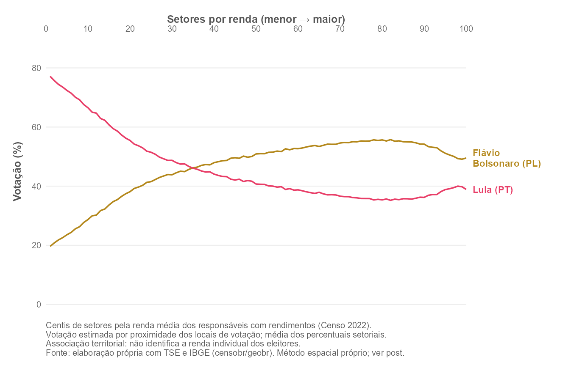
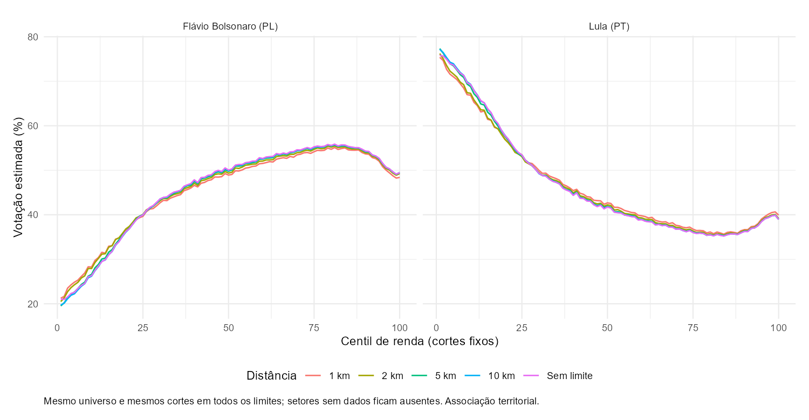
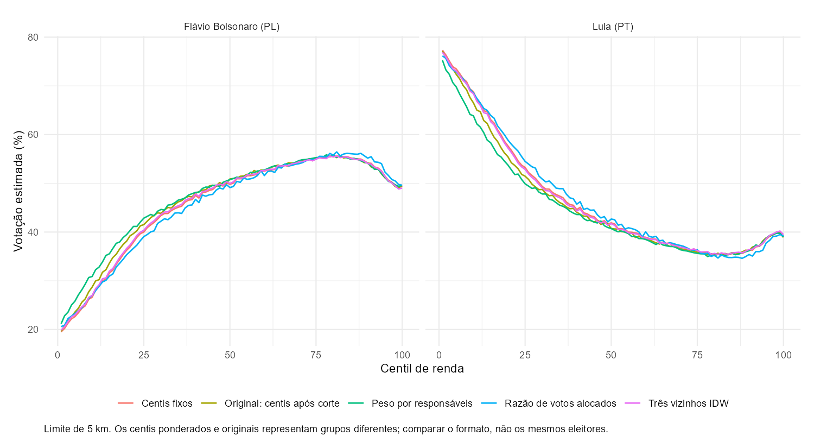
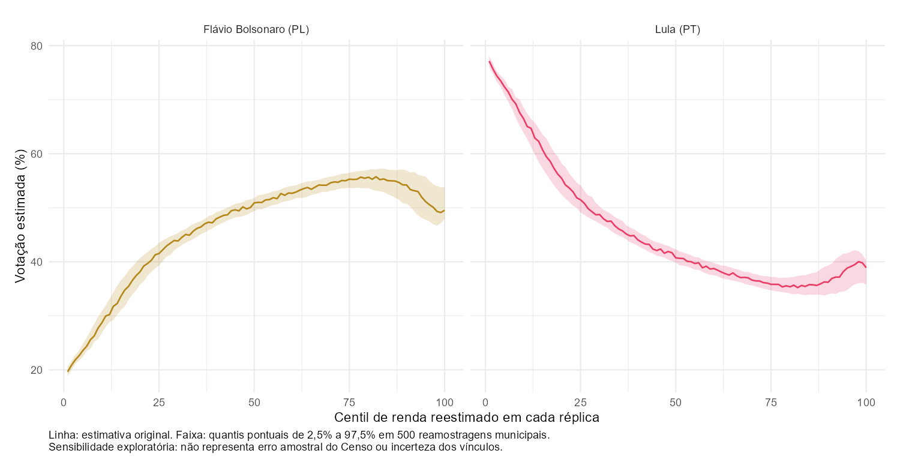

Votação presidencial por centil de renda dos setores censitários
A renda é do setor censitário; o voto observado é do local de votação. O gráfico associa a renda média de setores à votação dos locais próximos. Uma votação maior em setores de renda alta não demonstra que eleitores de renda alta votaram naquele candidato. Não há renda individual dos eleitores nem identificação de onde os moradores de cada setor votaram. A proximidade espacial é uma aproximação e não identifica o eleitorado do setor.

Visão geral
Este post reconstrói a relação entre renda e votação presidencial apresentada por Daniel Mariani, Paula Soprana e Nicholas Pretto na Folha de S.Paulo, em 12 de outubro de 2026. O eixo horizontal ordena setores censitários pela renda dos responsáveis pelos domicílios; o vertical mostra a votação estimada em cada grupo de setores.
Reprodução aproximada. O cruzamento nacional e as verificações numéricas foram executados com dados públicos. A regra espacial é uma implementação própria: a reportagem não especifica todos os parâmetros da atribuição por proximidade. As curvas calculadas apresentam diferenças em relação à imagem de referência, e a escolha da distância máxima tem efeito relevante.
Resultados e cobertura
A estimativa principal, com limite de 5 km, inclui 410.010 setores dos 458.772 presentes na tabela de renda (89,37%). Foram excluídos 9.241 sem renda elegível, 39.483 por distância e 38 sem associação espacial disponível. Os percentis têm 4.100 ou 4.101 setores cada.
No centil 46, Lula obtém 42,35%, com renda média setorial de 1,68 salário mínimo; a imagem fornecida mostra 41,12% e 1,69. A diferença de votação é de 1,23 ponto percentual. No centil 100, a estimativa é de 38,90% para Lula e 49,53% para Flávio, com renda de 16,52 salários mínimos. Flávio passa a superar Lula no centil 35 nesta implementação. Esses centis ordenam setores, sem permitir concluir qual fração da população votou em cada candidato.
| Distância máxima | Setores incluídos |
|---|---|
| 1 km | 326.951 |
| 2 km | 368.147 |
| 5 km (figura principal) | 410.010 |
Entre as curvas de 1 e 5 km, a maior diferença entre centis de mesmo número é de 6,32 pontos percentuais para Lula e 5,51 para Flávio. As amostras e os grupos de renda são recalculados em cada limite, de modo que essa diferença combina cobertura e composição dos centis. A exclusão de setores distantes dos locais de votação exige cuidado, especialmente na interpretação de áreas rurais. A associação mostrada é territorial e descritiva.
A auditoria encontrou 6.588 divergências de local em 497.897 seções entre o arquivo de resultados e o cadastro atual do TSE. O cálculo usa o local registrado nos resultados. Das 91.087 localizações com votos e coordenadas utilizáveis, 818 foram excluídas por incompatibilidade com a malha municipal de 2022; 90.269 locais permaneceram elegíveis à associação espacial.
Os 100 centis calculados, a análise de sensibilidade e os registros de cobertura e proveniência acompanham o post.
Diagnósticos da auditoria
Os locais usados representam 108.710.471 de 118.969.906 votos do denominador nacional (91,38%), em 81.076 locais. Nesse conjunto, Lula tem 44,84% e Flávio Bolsonaro 47,29%, diferenças de -0,32 e 0,25 p.p. em relação aos percentuais nacionais de 45,16% e 47,04%.
A figura principal mantém a média simples por setor e os centis recalculados na amostra incluída. As tabelas abaixo preservam os cortes definidos antes do filtro de distância; são exercícios distintos.
Exclusões a 5,0 km. Decis nacionais de todos os setores com renda elegível, incluindo os sem ligação geográfica:
| Decil | Elegíveis | Além do limite | Fração | Sem local/malha |
|---|---|---|---|---|
| 1 | 44.954 | 10.827 | 24,08% | 5 |
| 2 | 44.953 | 6.546 | 14,56% | 6 |
| 3 | 44.953 | 3.934 | 8,75% | 3 |
| 4 | 44.953 | 3.370 | 7,50% | 7 |
| 5 | 44.953 | 3.253 | 7,24% | 6 |
| 6 | 44.953 | 3.289 | 7,32% | 6 |
| 7 | 44.953 | 3.055 | 6,80% | 2 |
| 8 | 44.953 | 2.707 | 6,02% | 1 |
| 9 | 44.953 | 1.852 | 4,12% | 2 |
| 10 | 44.953 | 650 | 1,45% | 0 |
| Situação | Elegíveis | Além do limite | Fração | Sem local/malha |
|---|---|---|---|---|
| Rural | 102.167 | 37.299 | 36,51% | 19 |
| Urbana | 347.364 | 2.184 | 0,63% | 19 |
Cruzamentos com cortes fixos. A primeira superação e a superação sustentada até o fim da distribuição podem diferir:
| Limite | Primeiro centil | Primeiro sustentado |
|---|---|---|
| 1 km | 40 | 40 |
| 2 km | 38 | 38 |
| 5 km | 37 | 37 |
| 10 km | 37 | 37 |
| Sem limite | 37 | 37 |
Diferenças máximas entre métodos, no limite principal, comparando o mesmo índice de centil de cada definição:
| Referência | Comparação | Candidato | Máximo (p.p.) | Centis comparados |
|---|---|---|---|---|
| Original reranqueada | Cortes fixos | Lula | 2,90 | 100 |
| Original reranqueada | Cortes fixos | Flávio Bolsonaro | 2,59 | 100 |
| Original reranqueada | Ponderada por V06001 | Lula | 3,48 | 100 |
| Original reranqueada | Ponderada por V06001 | Flávio Bolsonaro | 3,04 | 100 |
| Original reranqueada | Razão das somas | Lula | 3,90 | 100 |
| Original reranqueada | Razão das somas | Flávio Bolsonaro | 3,37 | 100 |
| Original reranqueada | IDW k3 | Lula | 2,52 | 100 |
| Original reranqueada | IDW k3 | Flávio Bolsonaro | 2,25 | 100 |
| Cortes fixos | IDW k3 | Lula | 0,51 | 100 |
| Cortes fixos | IDW k3 | Flávio Bolsonaro | 0,45 | 100 |
V06001 pondera pessoas responsáveis pelos domicílios, não eleitores. A razão das somas conserva os votos dos locais usados e os aloca entre setores proporcionalmente a V06001; essa aproximação não revela onde cada eleitor reside. O IDW k3 também mede proximidade, não a inscrição eleitoral real.
No bootstrap exploratório de 500 reamostragens de municípios, 500 réplicas tiveram cruzamento observado. Os quantis 2,5%, 50% e 97,5% do primeiro centil de superação foram 33,0, 36,0 e 39,0. As bandas por centil são pontuais, não simultâneas, e não medem erro amostral do Censo nem incerteza da ligação espacial.
A auditoria geométrica independente aprovou 2.000 de 2.000 setores amostrados e 2.000 verificações k3. A discordância da projeção EPSG:5880 permaneceu como diagnóstico em 502 casos, sem substituir a referência geodésica.
Foram excluídos 818 locais com coordenadas fora do respectivo município na malha de 2022, contendo 269.462 votos do denominador nacional (0,23%). Renda e malha de 2022 não captam todas as mudanças até a eleição de 2026.
V06004 considera responsáveis com rendimento. O arquivo ResponsavelRenda não fornece a contagem desse grupo; portanto não calculamos a fração de responsáveis sem rendimento. V06002 conta moradores e não permite recuperar essa fração.
Referência visual aproximada da Folha. O erro absoluto médio dos pontos legíveis é:
| Candidato | Pontos legíveis | MAE (p.p.) |
|---|---|---|
| Flávio Bolsonaro (PL) | 6 | 0,82 |
| Lula (PT) | 7 | 1,19 |
Os pontos vêm de leitura visual manual e do tooltip da imagem, com arredondamento e regiões encobertas. Esse MAE não valida a curva completa nem demonstra equivalência ao método da Folha.
A nota da verificação espacial documenta a distorção da projeção nacional e a referência esférica independente adotada para conferir os vínculos. As exclusões por incompatibilidade municipal podem refletir geocodificação, cadastro ou mudanças na malha; o teste não identifica a causa de cada divergência.
Metodologia
A renda vem de censobr::read_tracts(year = 2022, dataset = "ResponsavelRenda"). A variável V06004 é o valor do rendimento nominal médio mensal das pessoas responsáveis com rendimentos por domicílios particulares permanentes ocupados. Não é renda domiciliar per capita nem renda média de todos os moradores. V06001 identifica o número de responsáveis, incluindo aqueles sem rendimento; não é a quantidade de responsáveis com renda. A tabela disponibilizada não informa essa última quantidade, portanto não é possível calcular a proporção sem rendimento com essas variáveis. Setores sem responsáveis ou com renda média ausente, sob sigilo ou não positiva são excluídos. O dicionário oficial do IBGE define as variáveis. Para exibir a renda em salários mínimos de 2022, divide-se o valor nominal por R$ 1.212, salário mínimo de julho de 2022, referência do Censo. A renda descreve os setores em 2022 e não mede a renda de seus moradores em 2026. Mudanças de composição, residência e renda entre os dois anos permanecem fora do alcance deste cruzamento.
Os votos vêm do arquivo Presidente — Votação por seção eleitoral — 2026, disponível em Resultados 2026, no TSE. Selecionam-se o primeiro turno e o cargo de presidente. O denominador contém os votos válidos de todos os candidatos, excluindo brancos e nulos. Essa classificação é conferida nas tabelas oficiais de candidatos e de detalhe da votação por município e zona: um número de candidato no arquivo bruto não garante que seus votos sejam válidos. Cada grupo precisa ser integralmente válido ou integralmente excluído; uma validade parcial bloqueia o cálculo, pois não se pode distribuí-la entre seções. Os registros sem candidato correspondente precisam fechar exatamente com os nulos técnicos oficiais em cada zona. Os totais válidos também precisam fechar em todas as zonas. As duas curvas exibidas são Lula (PT) e Flávio Bolsonaro (PL); por isso, não precisam somar 100%.
O pacote electionsBR oferece vote_section(), mas o código consultado documenta anos até 2024. Para 2026, o pipeline consulta a API pública CKAN do TSE e baixa o ZIP oficial, evitando depender de suporte ainda não confirmado do pacote. Os metadados e checksums dos arquivos utilizados ficam junto ao cache em data-raw/eleicoes-renda/.
Ligação espacial e interpretação
Uma seção eleitoral não é um setor censitário. A renda não deve ser anexada aos votos por igualdade entre esses códigos. O próprio arquivo de resultados identifica o local de cada seção. O cadastro de Eleitorado 2026, do TSE é usado para auditoria: se houver divergência, prevalece o código de local do arquivo de votos, preservando a localização registrada na apuração. As coordenadas são obtidas por geobr::read_polling_places(year = 2026), que combina coordenadas do TSE e geocodificação pelo geocodebr. Registros repetidos com coordenadas idênticas são consolidados; locais com coordenadas conflitantes são excluídos. Antes do uso, cada ponto precisa estar dentro da malha de seu município, obtida com geobr::read_municipality(year = 2022).
A versão independente usa o local de votação válido mais próximo do ponto interno de cada setor, dentro do mesmo município e de uma distância máxima configurável. Soma-se a votação das seções de cada local antes de calcular os percentuais. Essa estimativa descreve a vizinhança eleitoral, não o voto observado dos moradores do setor. A regra não reproduz necessariamente o procedimento de geocodificação e interpolação usado pela Folha.
O endereço de cadastro eleitoral pode estar desatualizado ou diferir da residência efetiva. Mesmo uma coordenada correta de local não informa a área de residência de seus eleitores. Essa limitação permanece nas alternativas de ponderação e interpolação e não é eliminada por aumentar a cobertura.
Os setores elegíveis são ordenados por renda, com código do setor como desempate, e separados em 100 grupos com números de setores tão próximos quanto possível. Cada setor tem o mesmo peso na média dos percentuais eleitorais do grupo. Os centis não representam centésimos da população, dos eleitores ou dos domicílios. O pipeline registra exclusões e compara diferentes distâncias máximas. A renda exibida para cada centil é a média simples das rendas médias setoriais, em salários mínimos. Empates na distância entre locais são resolvidos pela ordem do código composto de UF, município, zona e local.
Sensibilidade e limitações
O que muda nas análises de sensibilidade
A curva principal preserva a média simples dos percentuais atribuídos aos setores, com centis recalculados depois do corte de distância. Um mesmo local pode representar vários setores; portanto essa média não equivale à proporção nacional de votos. A comparação por cortes fixos mantém o universo dos setores com renda elegível e alguma ligação espacial, mesmo além de 5 km, e define os centis uma única vez. Compara limites de 1, 2, 5 e 10 km e sem limite; a quantidade de setores efetivamente observados acompanha cada grupo.
A alternativa ponderada por responsáveis ordena pela mesma renda e cria os grupos pelo acumulado de V06001 antes de cada setor. Nenhum setor é dividido entre grupos, de modo que não há exatamente 1% dos responsáveis em cada centil. Renda e votação são médias ponderadas por essa contagem, que inclui responsáveis sem renda. Esse peso não é o número de eleitores. Também não recupera a renda média individual agregada: não se conhece a quantidade de responsáveis com rendimento em cada setor.
A razão de votos alocados distribui uma única vez os votos de cada local entre os setores elegíveis ligados a ele, proporcionalmente a V06001, e divide a soma de votos do candidato pela soma de válidos de cada grupo. Os totais dos locais utilizados são conservados, mas a distribuição entre setores é uma hipótese de alocação, não uma observação dos votos de moradores.
A alternativa espacial usa até três locais próximos do mesmo município, com pesos inversamente proporcionais à distância e restritos ao limite adotado. Entre os até três selecionados, se há distância zero, somente os locais coincidentes recebem peso, dividido igualmente. A comparação mantém os mesmos grupos de renda. Usar três vizinhos testa a regra de interpolação; não identifica onde os moradores efetivamente votam.
As bandas da reamostragem municipal vêm de 500 réplicas com semente fixa: sorteiam-se municípios com reposição, mantêm-se todos os seus setores e recalculam-se os centis. Os quantis de 2,5% e 97,5% são bandas exploratórias pontuais, sem interpretação de erro amostral do Censo ou de incerteza da ligação espacial. O primeiro centil de superação é a primeira ocorrência; não exige que o candidato permaneça à frente nos centis seguintes.
A comparação com a Folha usa sete posições da imagem fornecida, com leituras visuais arredondadas e tolerância de leitura declarada de 1,5 ponto percentual. Essa tolerância não é um intervalo estatístico. O único valor textual exato é o tooltip de Lula no centil 46; a curva encoberta permanece sem valor. Não se dispõe da base original da reportagem. A figura deste post é sempre calculada a partir do TSE e do IBGE, sem traçar a imagem de referência.



Pipeline
Execute a partir da raiz do repositório:
010_Download_Censo_TSE.R— obtém renda setorial viacensobr, votos presidenciais e locais de 2026 pela API pública do TSE, com cache e registro das fontes.020_Cruzar_Setores_Votos.R— obtém malhas e locais viageobr, valida as chaves, associa locais e setores, documenta exclusões e produzdata-raw/eleicoes-renda/centis.csv.030_Verificar_Resultados.R— confere os percentuais, os 100 centis, as contagens e as médias usando cálculos independentes em R base; refaz as geometrias de 2.000 setores e confere os três vizinhos sem usar os pontos internos salvos pelo estimador.040_Preparar_Post.R— verifica o certificado e os hashes do030, prepara os resultados agregados do post e gera os diagnósticos em português e inglês.plot.R— gera PNG e PDF emoutput/figures/votacao-renda-centil/.
O gráfico usa linhas sem suavização, eixo de renda no topo, cores próximas à referência e rótulos diretos. O valor de 41,12% no centil 46 e a renda de 1,69 salário mínimo, visíveis na imagem de referência, são pontos de comparação; não são constantes inseridas na série calculada.
O limite padrão de distância é de 5 km. Para recalcular os centis com outro limite, defina VOTOS_MAX_DIST_M em metros antes de rodar o script 020. sensibilidade.csv contém as curvas sob limites de 1, 2 e 5 km, além do limite escolhido. O cruzamento nacional baixa malhas detalhadas e pode levar tempo e consumir alguns gigabytes de memória; os insumos ficam em cache. As três etapas de dados também estão incluídas em build_public_data.R.
Reprodutibilidade
Tier: A — fontes públicas. A execução nacional passou nas verificações independentes dos percentuais por local, dos denominadores de votos válidos, dos 100 centis, das contagens, das médias e das unidades de renda. O post permanece como rascunho editorial, com a aproximação espacial e sua sensibilidade explicitadas. Não há credencial nem dado individual identificável no produto agregado.
Para redesenhar a figura sem os downloads upstream, execute apenas plot.R: o script usa o snapshot agregado em posts/votacao-renda-centil/data/ quando não encontra uma versão recalculada em data-raw/eleicoes-renda/. As versões dos pacotes e os hashes dos insumos acompanham esse snapshot.
Como citar
Mançano, T. (2026, 14 de outubro). Votação presidencial por centil de renda dos setores censitários [Figura e pipeline de reprodução aproximada]. Open Data Analysis.
A análise original é de Mariani, Soprana e Pretto (Folha de S.Paulo, 2026). Esta implementação independente deve ser citada separadamente e não implica validação pelos autores da reportagem.